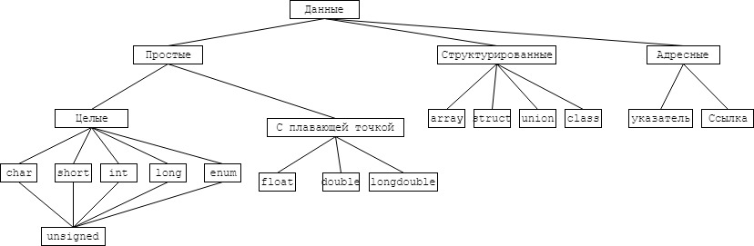
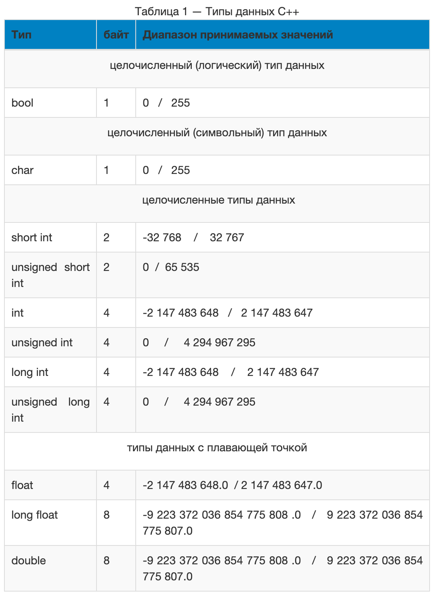

Типы данных С++
При написании программы на любом языке вам нужно использовать различные переменные для хранения различной информации. Переменные - это не что иное, как зарезервированные ячейки памяти для хранения значений. Это означает, что при создании переменной вы сохраняете некоторое пространство в памяти.
Вы можете хранить информацию различных типов данных, таких как символ, широкий символ, целое число, плавающая точка, двойная плавающая точка, логическое значение и т. д. На основе типа данных переменной операционная система выделяет память и решает, что можно сохранить в зарезервированная память.
К основным типам относят :
Состовные типы данных
Для формирования других типов данных используют основные типы + так называемые спецификаторы. Типы данных, созданные на базе стандартных типов с использованием спецификаторов, называют составными типами данных. В C++ определены четыре спецификатора типов данных:
Табличка тут

Более подробно

Теперь разберем каждый тип отдель и подробно
Целочисленные типы данных используются для представления чисел. Существует аж шесть штук:
short int, unsigned short int, int, unsigned int, long int, unsigned long int.
Все они имеют свой собственный размер занимаемой памяти и диапазоном принимаемых значений. В зависимости
от компилятора, размер занимаемой памяти и диапазон принимаемых значений могут изменяться.
Причём все типы данных в таблице 1 расположены в порядке возрастания размера занимаемой памяти и диапазона
принимаемых значений. Диапазон принимаемых значений, так или иначе, зависит от размера занимаемой памяти.
Соответственно, чем больше размер занимаемой памяти, тем больше диапазон принимаемых значений.
Также диапазон принимаемых значений меняется в случае, если тип данных объявляется с приставкой
unsigned —
Приставки целочисленных типов данных
short — приставка укорачивает тип данных, к которому применяется, путём уменьшения размера занимаемой памяти.
long — приставка удлиняет тип данных, к которому применяется, путём увеличения размера занимаемой памяти.
unsigned (без знака) — приставка увеличивает диапазон положительных значений в два раза, при этом диапазон отрицательных значений в таком типе данных храниться не может.
По сути , мы имеем один целочисленный тип для представления целых чисел — это тип int. Благодаря приставкам short , long , unsigned появляется некоторое разнообразие типов данных int, различающихся размером занимаемой памяти и (или) диапазоном принимаемых значений. Они нужны для контроля памати программы. Для легких расчетов можем взять short , когда мы точно знаме что работаем с диапозоном только положительных целых чисел то берем unsigned int, а если могут быоть большие числа то берем long int или long long int
Типы данных с плавающей точкой
В С++ существуют два типа данных с плавающей точкой: float и double. Типы данных с плавающей точкой предназначены для хранения чисел с плавающей точкой ( Да ладно блин - Америку открыл). Типы данных float и double могут хранить как положительные, так и отрицательные числа с плавающей точкой. У типа данных float размер занимаемой памяти в два раза меньше, чем у типа данных double, а значит и диапазон принимаемых значений тоже меньше. Если тип данных float объявить с приставкой long, то диапазон принимаемых значений станет равен диапазону принимаемых значений типа данных double. В основном, типы данных с плавающей точкой нужны для решения задач с высокой точностью вычислений, например, операции с деньгами или другими задачками.
Итог если не хочешь париться и терять какие-то значения для задачки бери ты double, а если паришься по памяти и поифг на то что можешь петяреть тысячную то бери float.Тип данных char
Тип данных char — это целочисленный тип данных, который используется для представления символов. То есть, каждому символу соответствует определённое число из диапазона [0;255]. Тип данных char также ещё называют имвольным типом данных, так как графическое представление символов в С++ возможно благодаря char. Для представления символов в C++ типу данных char отводится один байт, в одном байте — 8 бит, тогда возведем двойку в степень 8 и получим значение 256 — количество символов, которое можно закодировать. Таким образом, используя тип данных char можно отобразить любой из 256 символов. Все закодированные символы представлены в таблице ASCII.
Тип данных bool
bool — целочисленный тип данных, так как диапазон допустимых значений — целые числа от 0 до 255. Но как Вы уже заметили, в круглых скобочках написано — логический тип данных, и это тоже верно. Так как bool используется исключительно для хранения результатов логических выражений. У логического выражения может быть один из двух результатов true или false. true — если логическое выражение истинно, false — если логическое выражение ложно
Но так как диапазон допустимых значений типа данных bool от 0 до 255, то необходимо было как-то сопоставить данный диапазон с определёнными в языке программирования логическими константами true и false. Таким образом, константе true эквивалентны все числа от 1 до 255 включительно, тогда как константе false эквивалентно только одно целое число — 0. Рассмотрим программу с использованием типа данных bool.